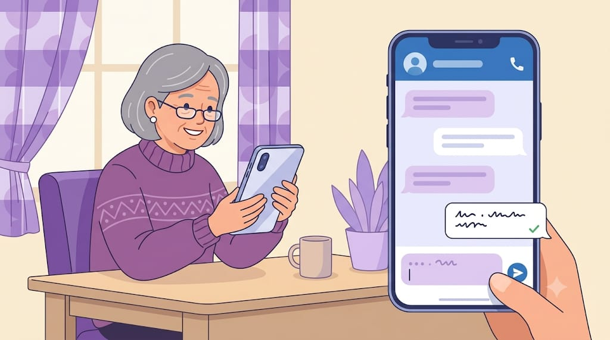
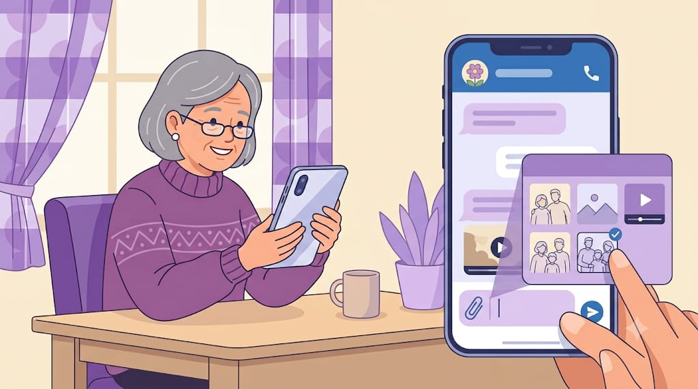
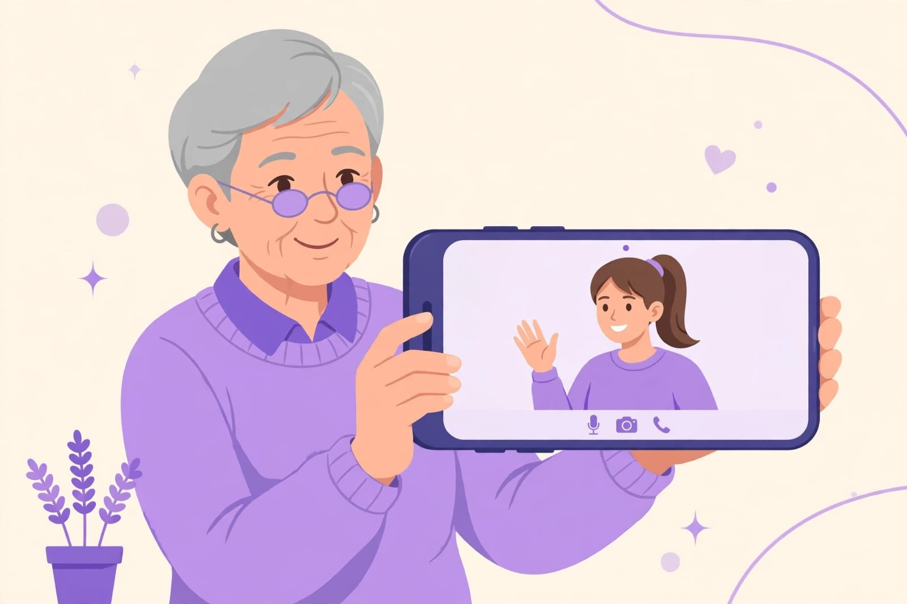

WhatsApp Guide
Learn how to use WhatsApp for everyday communication, step by step.

1. Send a Message
Open WhatsApp and select a contact. Type your message in the message box and tap the send button.

2. Send a Photo or Video
Open a WhatsApp chat, tap the attachment or camera option, choose a photo or video, and tap send.

3. Make a Video Call
Open a contact's chat and tap the video call button to start a video call.